Tufts Electric Racing: Design & FEA
Formula SAE teams design, build and race a small open-wheel car every year. Our team’s work happens in shared Onshape and SolidWorks documents that anyone on the team can open and edit, and we don’t write semester reports or hold showcases the way EWB does. This page pulls my part of that work out of the CAD. It covers three parts I designed from scratch, and the brake, cockpit and chassis assemblies I worked on with the team.
How the Car Gets Designed
Every part on an FSAE car is shaped by two things: the rules and the competition events. The rulebook sets minimum requirements for the frame, driver safety, brakes and, on an electric car, the high-voltage tractive system. Technical inspection checks all of it before the car is allowed on track. Then the car is scored in static events (design, cost and business presentations) and dynamic events (acceleration, skidpad, autocross, endurance and efficiency).
Parts loop through those stages several times. The team keeps one living model of the whole car, and every subsystem has to fit inside it alongside the frame, driver, motor, accumulator (battery pack) and electronics.
Motor Sprocket Adapter
My design · Oct 2024 – Spring 2025 · Powertrain

The motor turns the rear axle through a chain. This adapter is the link between the two: it slides onto the motor’s splined output shaft and carries the small drive sprocket, so the motor’s torque goes shaft → spline → adapter → sprocket → chain.
This is my own Onshape document, from first sketch to the released version:
- Modeled the splined shaft so the adapter’s bore could be designed around the real interface.
- Designed the flange with a five-bolt pattern and a raised boss to locate the sprocket.
- Fit-checked against a 3D-printed mock-up of the motor before cutting metal.
- Worked through several revisions, including one without extra holes, and released a final version on 2/7/25.
- Set up a separate assembly for welding the sprocket to the flange.
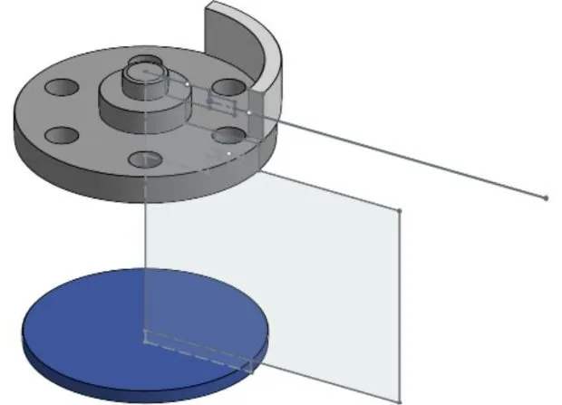
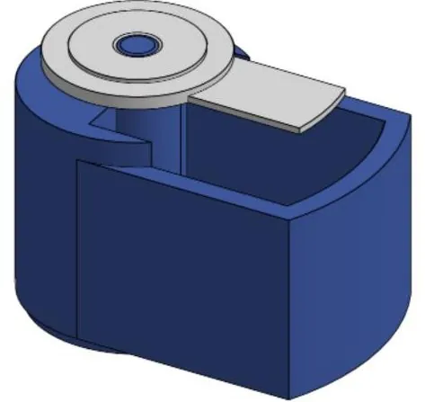
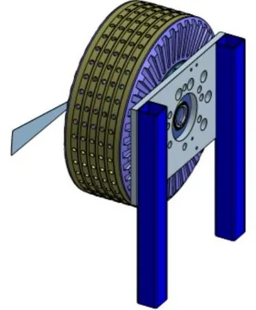
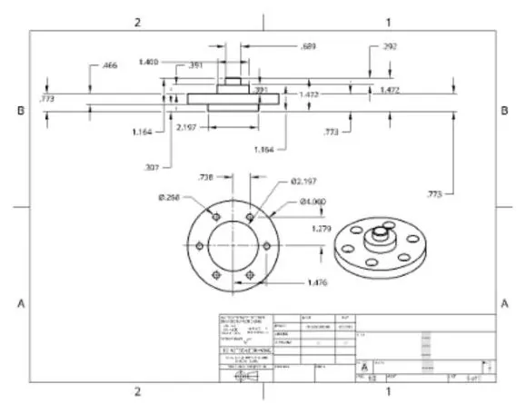
What the part has to survive
A drivetrain adapter is loaded hardest when the motor delivers peak torque, at launch in the acceleration event or coming out of slow corners. That torque passes through three places that can fail, so the design has to check each one:
- The spline, where bearing stress on the teeth can wear or round them.
- The sprocket joint, either the weld or the bolts in shear.
- The flange, where it is thinnest around the bolt holes.
The chain also pulls sideways on the sprocket, which bends the adapter on the shaft. That is why the sprocket sits close to the flange instead of out on a long hub.
Brakes, Pedals & Wheel Corners
FSAE brakes are tightly regulated: the car needs two independent hydraulic circuits, it must lock all four wheels in the brake test at tech inspection, and the pedal box has to withstand a 2,000 N pedal force without failing. That last number is the design load for the pedal, its pivot and its mounts, and it is the classic FEA case on this subsystem.
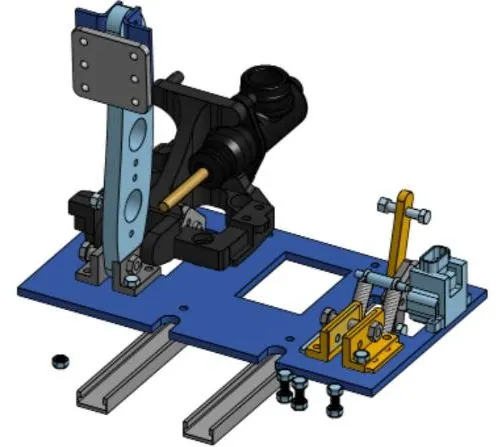
Measuring pedal force
To tune the brakes you need to know how hard drivers actually press, not just the rulebook maximum. I worked on mounting a 50 kg strain-gauge load cell (a half-bridge sensor) to the brake pedal, and on a test jig that reacts the pedal force through the sensor. Together they let us correlate driver input with brake line pressure.
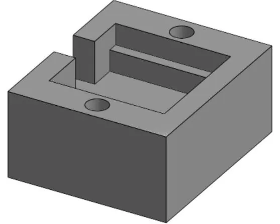
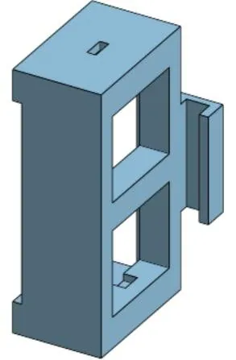
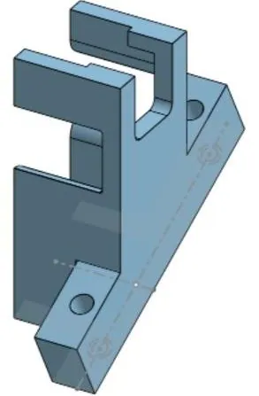
The wheel corner
Brake torque is reacted from the caliper, through the knuckle (upright), into the suspension. I worked in the corner models: the hub and hub nut, the knuckles for all four corners, and the brake caliper model (a Wilwood PS-1). Knuckles and hubs are classic FEA parts because they combine braking, cornering and bump loads at the same time.
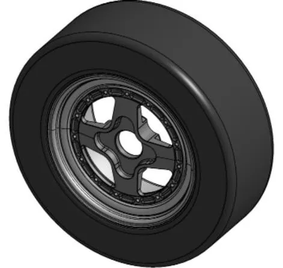
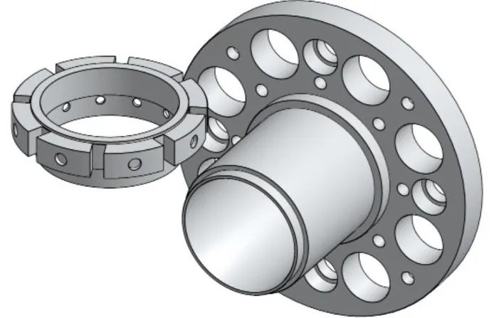
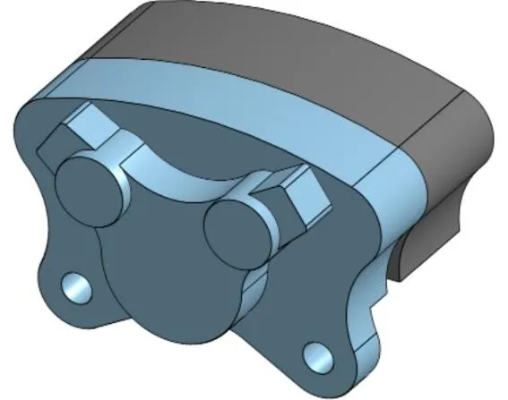
Cockpit & Driver Protection
Cockpit floor
My design · Feb 2025
The rules require a solid floor closeout under the driver. I designed ours as a flat pattern sized to the frame, with clearance cutouts and a slot, so it could be laser-cut in one piece instead of hand-trimmed.
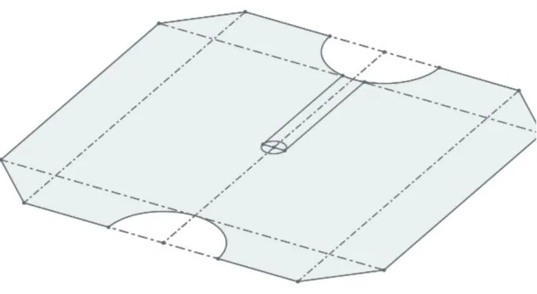
Firewall fasteners
My design · Apr 2025
On an electric car, a firewall has to separate the driver from the high-voltage system. Firewall panels still have to come off for maintenance and inspection, so the fasteners matter. I designed and 3D-printed a set of quick-release fastener concepts, a ball stud and a split-pin clip, to test how well each one held a panel and how easily it came off.
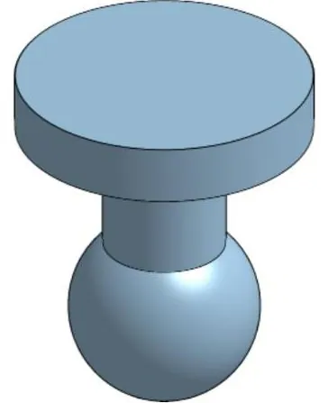
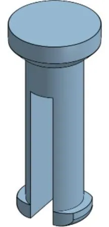
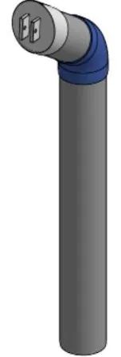
I also worked on a steering-column protector, a 3D-printed adapter and base attachment that fit over the steering column.
Chassis & Packaging
Packaging means fitting everything into the frame: the driver, motor, differential, accumulator, HV and LV electronics boxes, radiator and pump, coilovers and pedal box. Each one needs space, mounting points and access. All of it has to fit while the frame still meets the rules for the main and front hoops, side impact structure and impact attenuator. I worked in the full-car assemblies, including the one prepared for the Electrical System Form (ESF), the rules document that describes an EV’s high-voltage system, and in the current working chassis model.
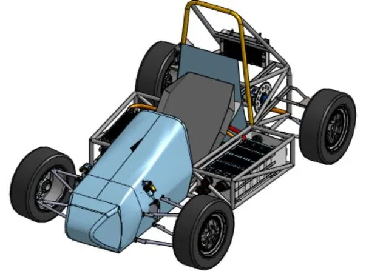
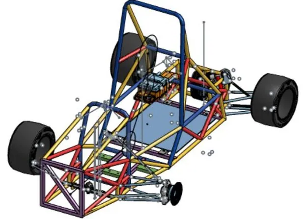
2026 chassis concepts
Early concept studies for the next car: two tube-frame layouts and a body shell sketched around them.
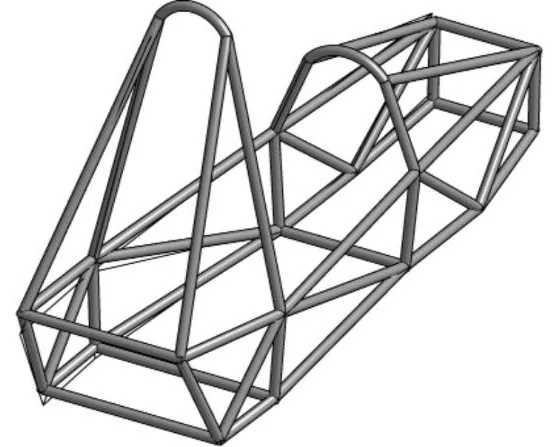
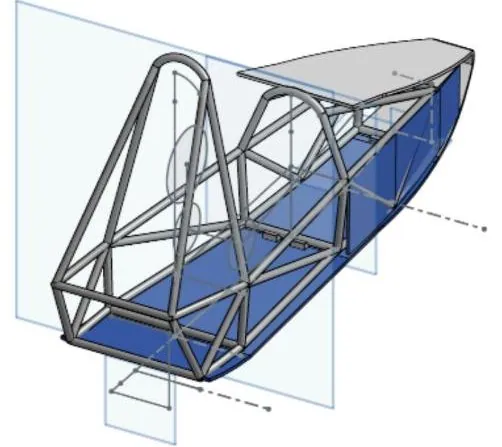
How I approach FEA on these parts
- Start from the governing load. That’s the rule load where one exists (2,000 N on the brake pedal) or a worst-case driving load (peak motor torque, combined braking and cornering at a corner).
- Constrain it the way it is really held. Fix bolt holes and pivots where the part mounts, not whole faces, because over-constraining hides stress.
- Refine the mesh until the answer stops changing, especially at fillets and holes where stress concentrates.
- Judge against yield with a factor of safety, then take material out where stress is low to save weight, and re-run.
For a complete FEA write-up with mesh convergence and physical test validation, see Design for Deflection: “The Fishhook”.
Reflections
On a car, nothing is designed alone. A sprocket adapter depends on the motor’s spline, the chain line and the frame mounts, and a floor panel depends on the frame’s exact tube positions. Working in shared Onshape documents taught me to design around other people’s interfaces, to fit-check cheaply with printed and laser-cut parts before committing to machined ones, and to keep revisions clearly labeled so the team always knows which version is final.
These links open in Onshape and need access to the Tufts Racing workspace.